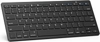

mijn product
Welkom op mijn webshop.
Hier kunt u toetsenborden vinden van verschillende designs.
about me
mezelf
Welkom op mijn webshop.
Ik ben Muhammet Murat en volg de richting toegepaste informatica op KDG.
Voor een project heb ik deze webshop.
waarom?
Ik heb als product toetsenbord gekozen omdat het iets is dat we elke dag gebruiken maar er niet echt bij still staan dat er verschillende soorten zijn met allemaal hun eigen functie.
getuigenissen
getuigenis 1
Voor ik deze webshop had gevonden had ik problemen met het zoeken naar een goed toetsenbord. Ik kocht elke keer een nieuw toetsenbord omdat het toetsenbord niet genoeg stevig was of de toetsen gingen steeds eruit. Maar dat werd allemaal opgelost toen ik deze webshop vond. Ik kon hier mijn gewenste toetsenbord vinden en special voor mezelf personaliseren.
getuigenis 2
Het beste vindt ik dat er verschillende toetsenborden zijn waardoor ik direct de perfecte product voor mij kan vinden. Ik vond het ook handig dat ik het kon aanpassen aan mijn eigen stijl. En het is ook handig als je iemand een cadeau wilt geven
getuigenis 3
Ik ga deze webshop aan iedereen aanraden. Het is snel, makkelijk navigeerbaar. Ik weet altijd waar ik ben en het heeft een groot assortiment aan toetsenbord.